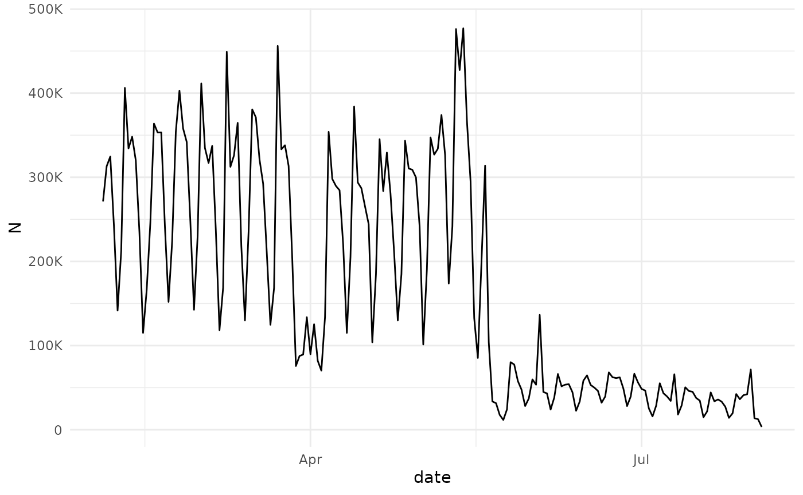
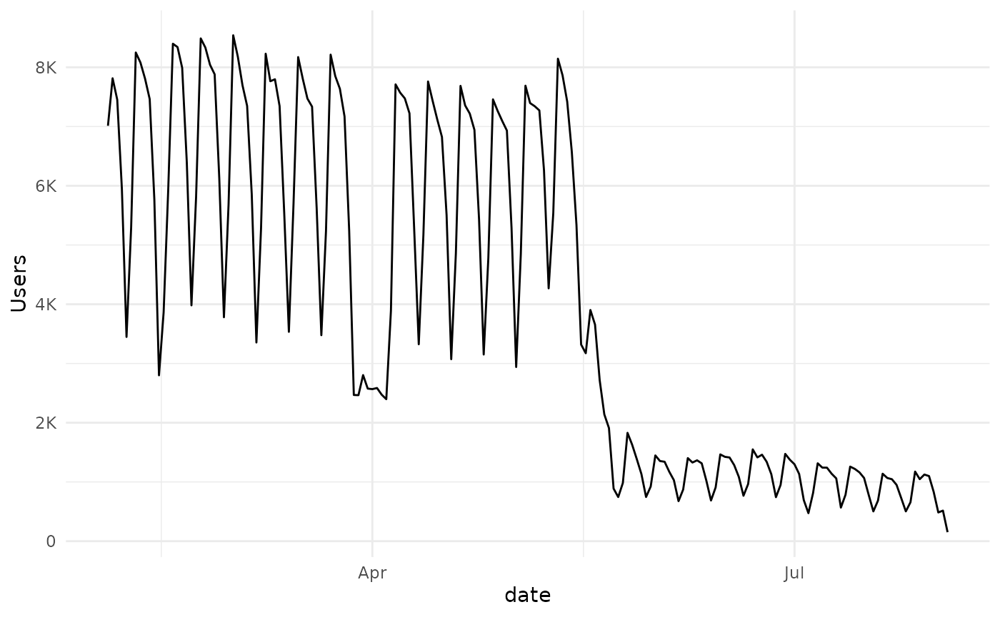
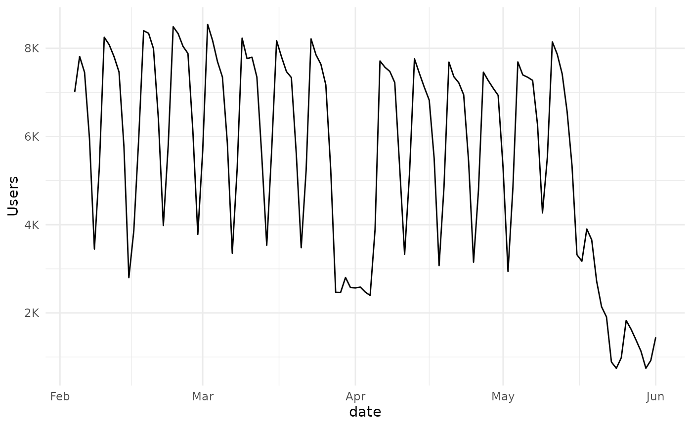
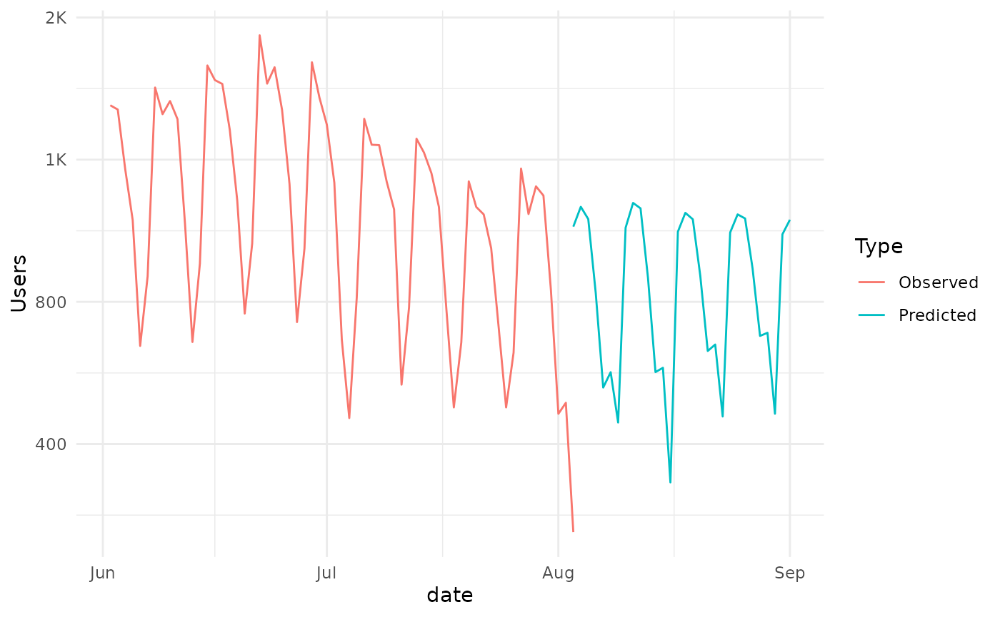
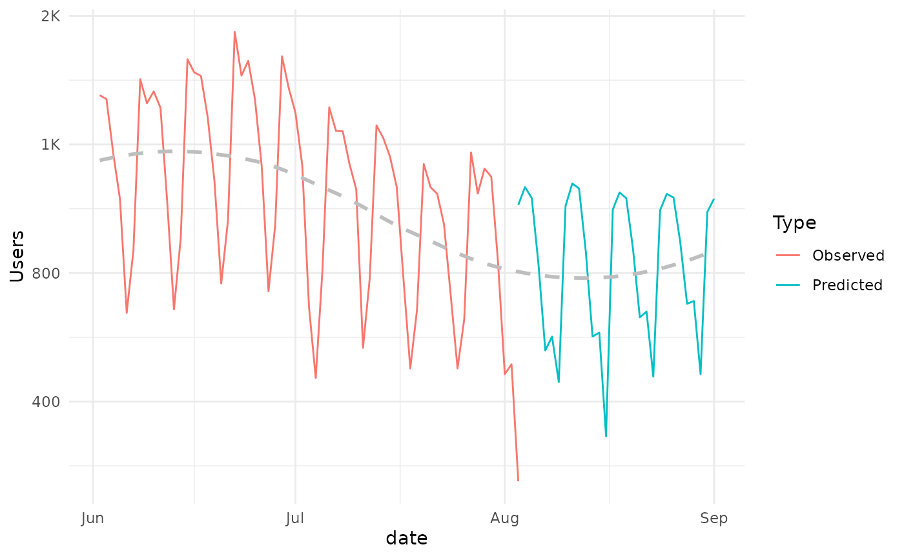

forecast-example.RmdForecasting is a frequent activity for the learning analytics practitioner. In this example we will explore how to extract and format data with the moodleR package for a forecasting exercise.
In addition to moodleR we will be using dplyr and ggplot2 in this example. Let’s go ahead and load these packages.
For this example we will use the Moodle log, which we can access using the mdl_log() function.
my_log <- mdl_log()Once we have this reference we can summarize log-lines and unique users per day by using dplyr verbs. Since we intend to convert the timecreated column using the anytime package, we will need to call dplyr::collect() and convert our reference to a tibble.
We can now vizualize the data.
my_timeseries %>%
ggplot(aes(date,N))+
geom_line() +
scale_y_continuous(labels=scales::label_number_si())
my_timeseries %>%
ggplot(aes(date,Users))+
geom_line() +
scale_y_continuous(labels=scales::label_number_si())
Two clear patterns emerge, There is a break at the end of March, beginning of April and the semester is over at the beginning of June. Neither of these observations are in any way unexpected, and would probably be arrived at using common sense, with some minimal input from the institution in question.
For the purposes of this example we will divide the dataset into two parts, with a cutoff in early June.
my_cutoff <- as.Date("2020-06-01")
my_timeseries_1 <- my_timeseries %>%
filter(date <=my_cutoff )
my_timeseries_2 <- my_timeseries %>%
filter(date > my_cutoff )
my_timeseries_1 %>%
ggplot(aes(date,Users))+
geom_line() +
scale_y_continuous(labels=scales::label_number_si())
my_timeseries_2 %>%
ggplot(aes(date,Users))+
geom_line() +
scale_y_continuous(labels=scales::label_number_si())
A seasonal pattern is obvious, and clearly the activity mostly follows a weekly pattern.
We can use either of the subsets of data to create an arima model, available in the stats package. We set the order and period parameters to estimate a fit.
my_model_2
#>
#> Call:
#> arima(x = my_timeseries_2$Users, seasonal = list(order = c(3L, 0L, 0L), period = 7L))
#>
#> Coefficients:
#> sar1 sar2 sar3 intercept
#> 0.6761 0.3622 -0.1834 972.0461
#> s.e. 0.1593 0.1880 0.1672 99.3799
#>
#> sigma^2 estimated as 29454: log likelihood = -418.57, aic = 847.14We can now use the model to predict the number of unique users for the next month:
my_pred <- predict(my_model_2,30)$predWe can use ggplot to visualize the prediction made by our model.
start_date <- max(my_timeseries_2$date)-1
data.frame(date = start_date + 1:length(my_pred), Users = my_pred) -> predicted_users_2
predicted_users_2 %>%
ggplot(aes(x = date, y = Users))+
geom_line() +
scale_y_continuous(labels=scales::label_number_si())
And we can combine the two in one plot. For this we will need to create a data.frame since this is what ggplot expects as input.
my_timeseries_2 %>%
select(date,Users) %>%
mutate(Type = "Observed") %>%
rbind(
predicted_users_2 %>%
mutate(Type = "Predicted")
) -> combined_ts
my_plot <- combined_ts %>%
ggplot(aes(date,Users, color = Type))+
geom_line() +
scale_y_continuous(labels=scales::label_number_si())
my_plotAnd we can see that the prediction is consistent with the observed pattern and generally declining trend.
This trend can also be visualized by adding a geom_smooth to the plot.
my_plot +
geom_smooth(
se=FALSE,
mapping = aes(x=date,y=Users),
data = combined_ts %>% select(date,Users),
inherit.aes = FALSE,
lty=2,
color = "gray")